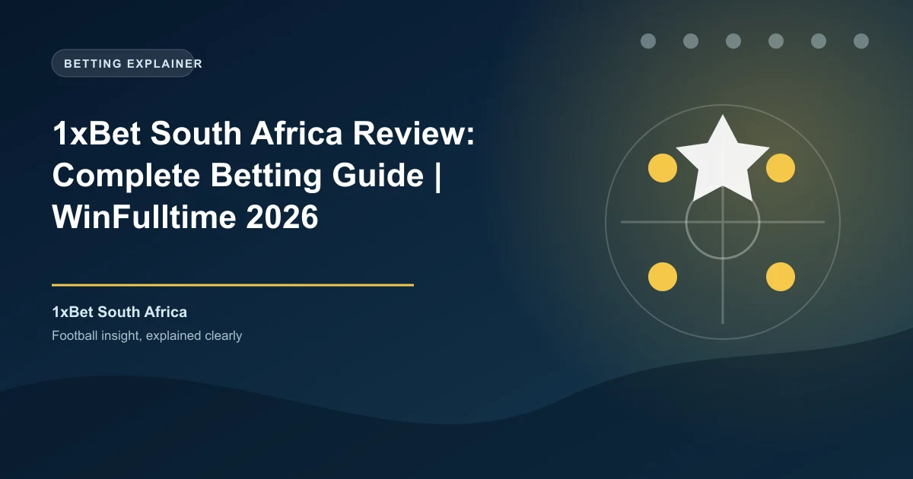

South Africa has one of the most developed gambling markets on the African continent, with a well-established regulatory framework governed by the National Gambling Board (NGB) and nine provincial gambling boards. However, online gambling regulation remains in a transitional phase. 1xBet operates in South Africa under its offshore Curaçao license, without a provincial gambling board authorization. This review covers what South African bettors need to know about using 1xBet.
The legal situation for online betting in South Africa is complex. The National Gambling Act (No. 7 of 2004) regulates all gambling activities in the country, and the National Gambling Amendment Act of 2008 provided provisions for online gambling. However, the regulatory framework for online sports betting is still evolving.
Under current law, online sports betting is permitted in South Africa, but operators must hold a license from one of the nine provincial gambling boards. Licensed operators include well-known local brands like Hollywoodbets, Betway South Africa, and Sportingbet. 1xBet does not hold a provincial gambling board license, meaning it operates in a grey area. The platform accepts South African bettors and supports ZAR transactions, but without local regulatory oversight.
For South African bettors, this means that while using 1xBet is not explicitly illegal at the individual level, the platform is not regulated by any South African gambling authority. The National Gambling Board cannot intervene in disputes between South African bettors and 1xBet. Bettors should understand this limitation before using the platform.
South Africa's online gambling framework is still developing. While the National Gambling Act provides a foundation, the specific regulations for online sports betting operators are not fully implemented. 1xBet's offshore Curaçao license allows it to operate internationally, but it does not constitute a South African gambling license. South African bettors using 1xBet are doing so at their own discretion, without the consumer protections afforded by a provincially licensed operator.
1xBet South Africa offers new players a 200% first deposit bonus up to 3,000 ZAR. Here is the breakdown:
| Detail | Value |
|---|---|
| Welcome Bonus | 200% first deposit bonus |
| Maximum Bonus | 3,000 ZAR |
| Minimum Deposit | ~50 ZAR |
| Wagering Requirement | 5x in accumulator bets |
| Minimum Odds per Leg | 1.40 |
| Minimum Selections | 3 per accumulator |
| Validity Period | 30 days from registration |
The 200% match rate effectively triples your starting bankroll, giving you 150 ZAR to bet with from a 50 ZAR deposit. The bonus must be wagered through accumulator bets with at least three selections at minimum odds of 1.40 per leg within 30 days.
Ongoing promotions for South African players include accumulator boosts, free bet offers tied to rugby and cricket events, and cashback promotions on losing bets. 1xBet South Africa also runs enhanced odds promotions during major sporting events including the Rugby World Cup, Cricket World Cup, and Premier Soccer League (PSL) season.
1xBet South Africa supports a range of payment methods suitable for the South African market. While it does not support local mobile payment platforms like some competitors, it offers reliable international and local options.
1xBet South Africa supports deposits in Bitcoin, Ethereum, USDT, Tron, Litecoin, and over 40 additional cryptocurrencies. Crypto deposits are processed instantly with no fees from 1xBet's side. Given South Africa's growing crypto adoption, this is a significant advantage for tech-savvy bettors. According to Statista, South Africa has one of the highest cryptocurrency adoption rates on the African continent.
1xBet South Africa processes withdrawals through several methods:
| Method | Minimum Withdrawal | Processing Time |
|---|---|---|
| Visa (Fast Withdrawal) | ~100 ZAR | 15 minutes - 7 days |
| Skrill / Neteller | ~100 ZAR | 15 minutes |
| Bank Transfer | ~100 ZAR | 1-7 business days |
| Cryptocurrency | ~100 ZAR (equivalent) | 15 minutes |
1xBet charges no internal withdrawal fees. E-wallet and cryptocurrency withdrawals are typically processed within 15 minutes, while bank transfers and card withdrawals can take longer. KYC verification is required before the first withdrawal.
South African bettors should note that gambling winnings are generally not taxed in South Africa. The South African Revenue Service (SARS) does not levy tax on recreational gambling winnings, though professional gamblers may be subject to income tax. This is an advantage compared to markets like Kenya (20% WHT) or India (30% tax on winnings).
1xBet covers over 60 sports with extensive market depth. For South African bettors, rugby and cricket are the most popular sports, followed by football and horse racing.
Rugby is South Africa's most beloved sport, and 1xBet delivers comprehensive coverage. The platform covers Super Rugby (including the Bulls, Stormers, Sharks, and Lions), the United Rugby Championship, the Rugby Championship, and the Rugby World Cup. Markets include match winner, handicap, over/under points, first try scorer, man of the match, and detailed player props. The Springboks generate massive betting interest, particularly during World Cup years.
South Africa has a rich cricket tradition, and 1xBet provides extensive coverage. The platform covers Test matches, ODIs, T20Is, the Indian Premier League (IPL), Big Bash League (BBL), and domestic South African cricket. Markets include match winner, top batsman, top bowler, total runs, over/under totals, and detailed session betting.
The live betting section at 1xBet South Africa is comprehensive, with thousands of live events available daily. Rugby and cricket live betting are particularly popular, with in-play markets available for matches across multiple leagues and tournaments. The live interface provides real-time score updates, statistical overlays, and dynamic odds.
1xBet offers live streaming on select events for registered users with a positive account balance. The cash-out feature is available on both pre-match and live bets, allowing South African bettors to secure profits before events conclude.
1xBet offers a dedicated mobile app for Android devices, available as a direct APK download from the 1xBet South Africa website. The app is lightweight and optimized for the Android devices commonly used in South Africa.
The mobile app provides full access to all betting markets, live streaming, cash-out, deposits and withdrawals, and account management. Given that mobile betting accounts for the majority of all online wagers in South Africa according to Statista, the app's performance is critical for the South African market.
The app supports biometric login and works efficiently on both WiFi and mobile data connections.
1xBet South Africa provides 24/7 customer support through multiple channels:
Support is available in English and Afrikaans, catering to South Africa's multilingual population. According to Trustpilot, 1xBet's customer support ratings vary, with positive reviews highlighting live chat speed and negative reviews focusing on withdrawal verification delays.
1xBet provides responsible gambling tools including deposit limits, session time limits, self-exclusion, and reality checks. However, as an offshore Curaçao-licensed operator without a provincial gambling board license, 1xBet is not required to participate in South African responsible gambling frameworks.
The National Gambling Board oversees responsible gambling in South Africa, and licensed operators are required to contribute to the National Responsible Gambling Programme (NRGP). South African bettors using 1xBet should take extra personal responsibility for managing their gambling activity.
Registration on 1xBet South Africa is straightforward:
You must be at least 18 years old (the legal gambling age in South Africa) and complete KYC verification before your first withdrawal. KYC requires a government-issued ID (South African ID book/card, passport, or driver's license) and proof of address.
1xBet offers a decent product for South African bettors, with comprehensive rugby and cricket coverage, competitive odds, and a generous 200% welcome bonus up to 3,000 ZAR. The support for Visa, Mastercard, EFT, and cryptocurrency provides reliable payment options.
The primary concern is the lack of a provincial gambling board license. South African bettors who prioritize regulatory protection may prefer locally licensed platforms like Hollywoodbets or Betway South Africa, which hold provincial licenses and contribute to the National Responsible Gambling Programme. For bettors who are comfortable with offshore licensing and want access to 1xBet's broader international market coverage, it offers reasonable value.
Ready to bet? Check our free daily rugby and cricket predictions for value bets across Super Rugby, URC, and international fixtures.